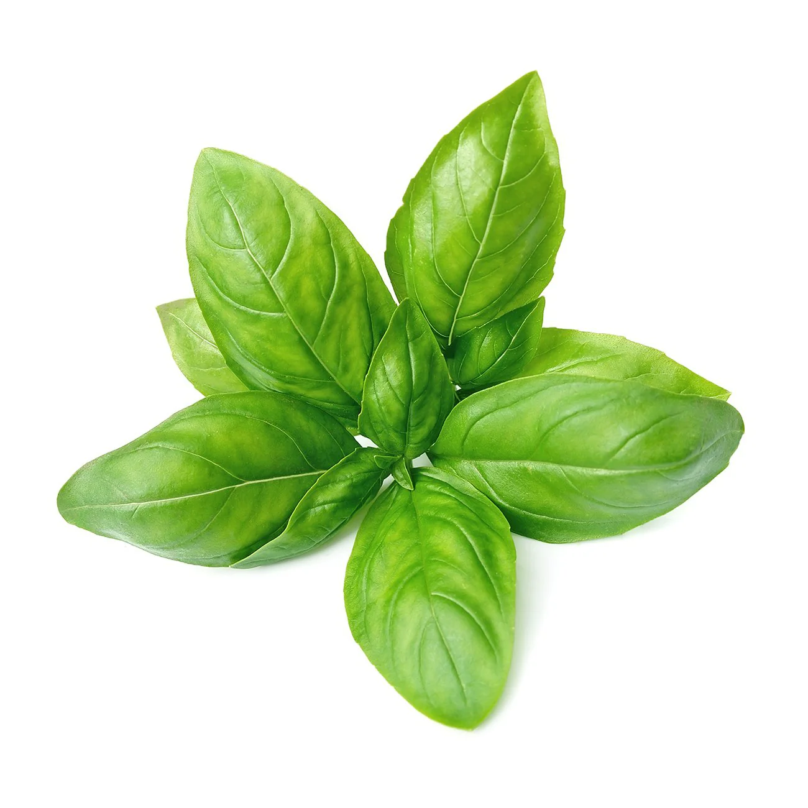
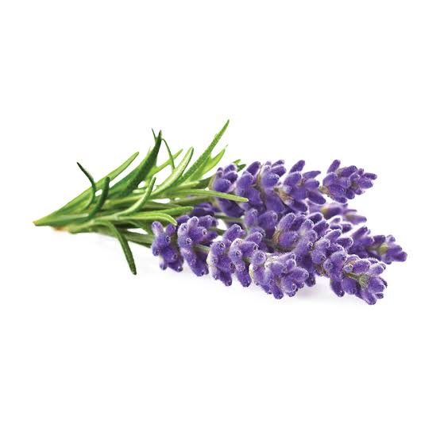
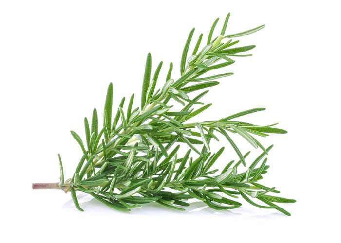

Getting to Know the Aromatic Family Members
Peppermint
A hybrid mint known for its refreshing flavor and soothing properties, especially for digestion and headaches.
learn More

Basil
A fragrant herb used widely in Mediterranean and Asian cuisines, especially for pesto and curries.
learn More

Lavender
A fragrant herb known for its calming properties, often used in aromatherapy for relaxation and sleep.
learn More

Rosemary
A woody herb used in Mediterranean cooking. It has a strong flavor, often paired with meats and vegetables.
learn More